Web apps & Websites
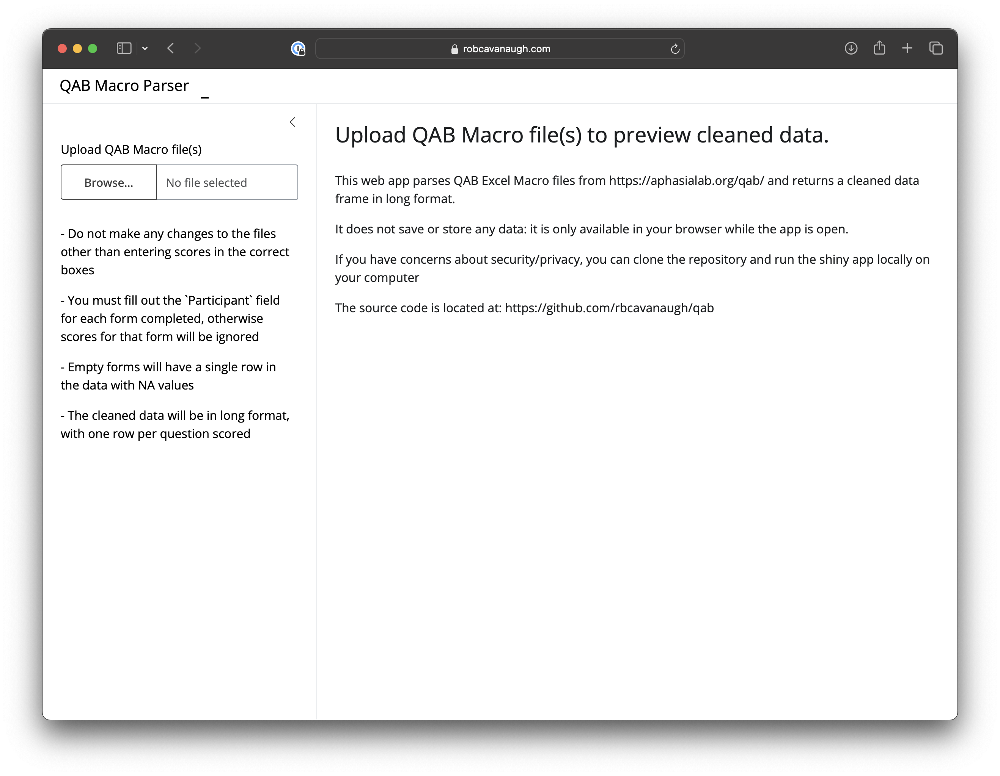
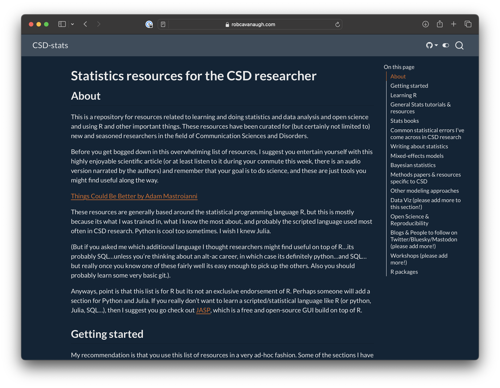
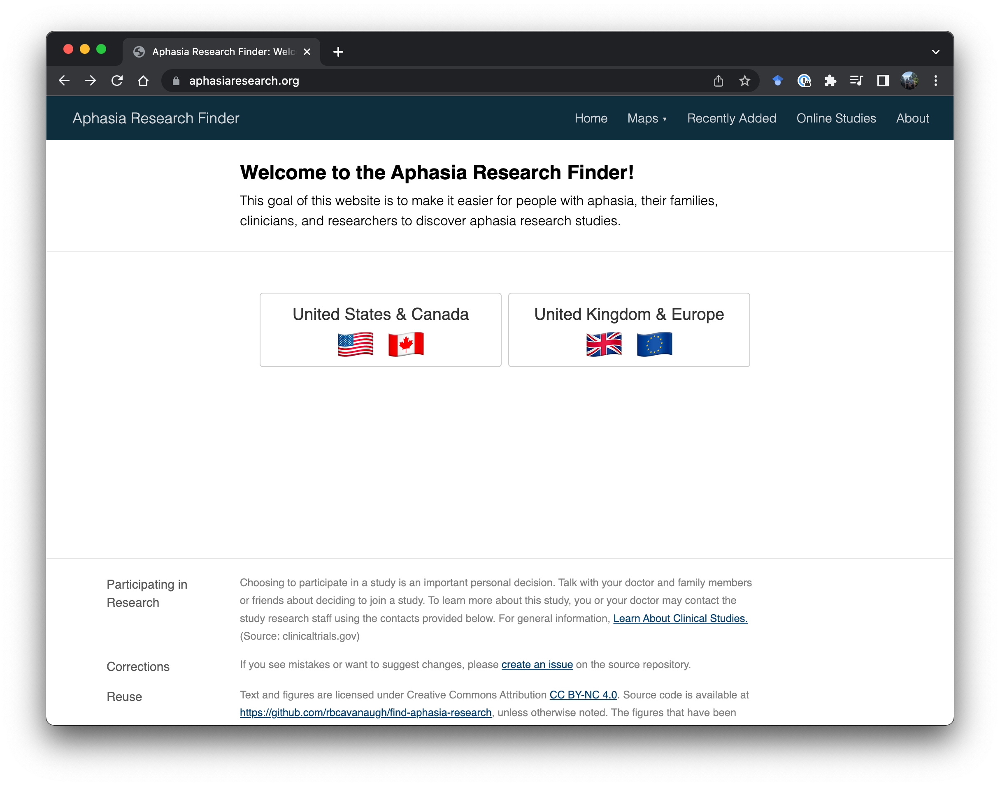
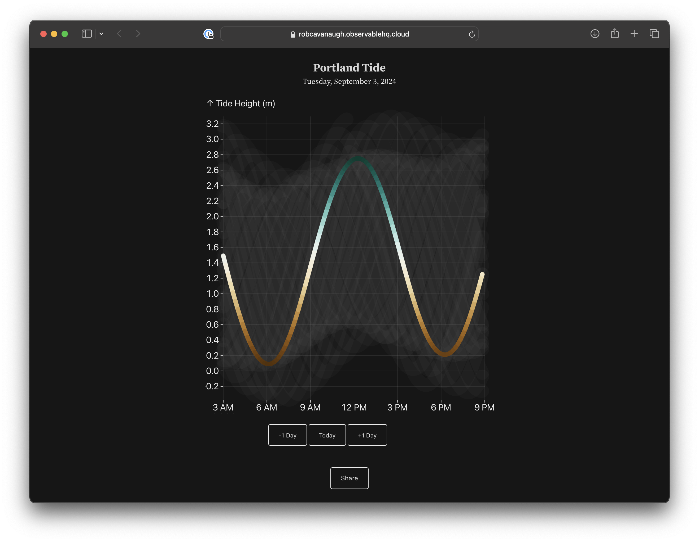
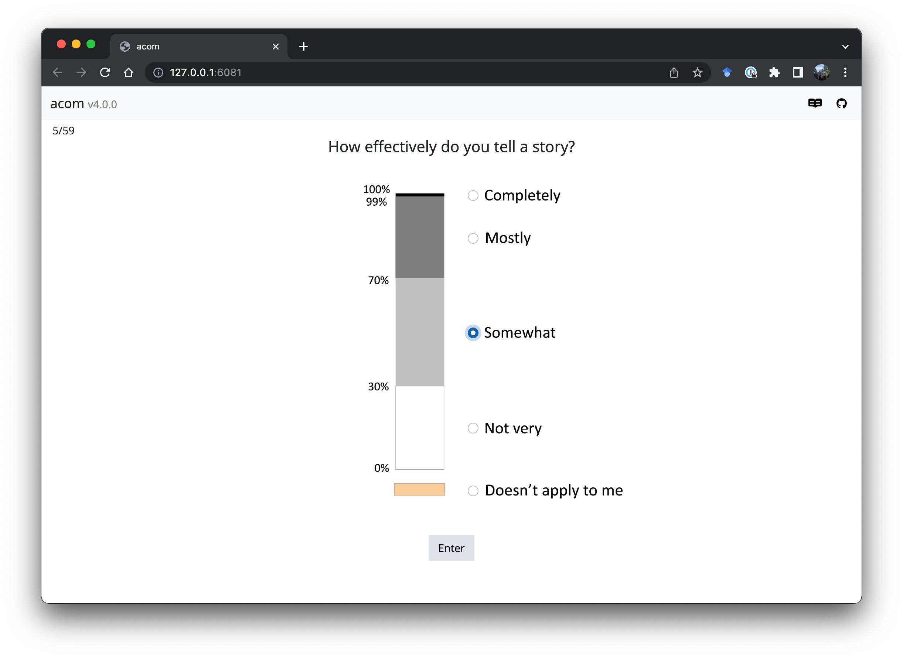
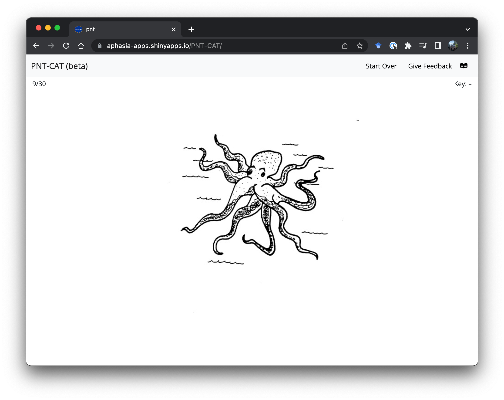
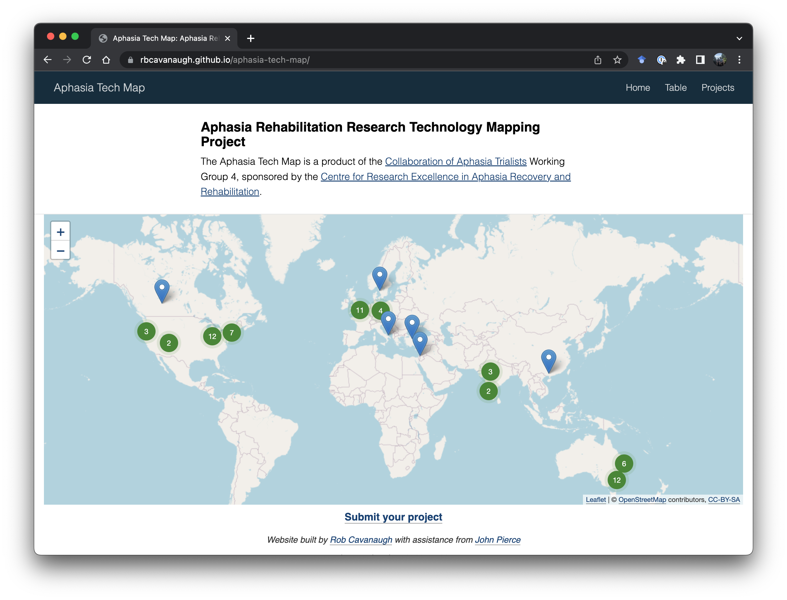
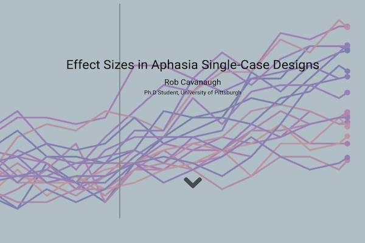
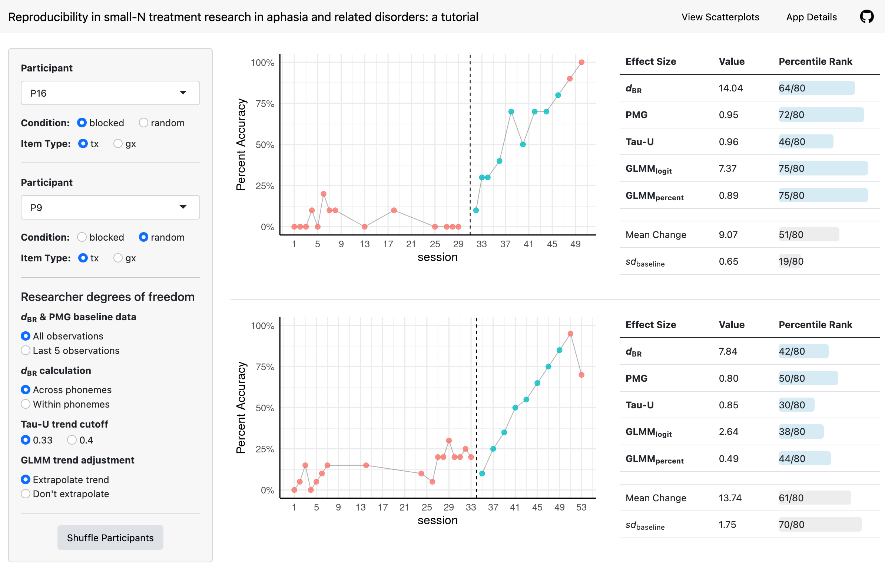
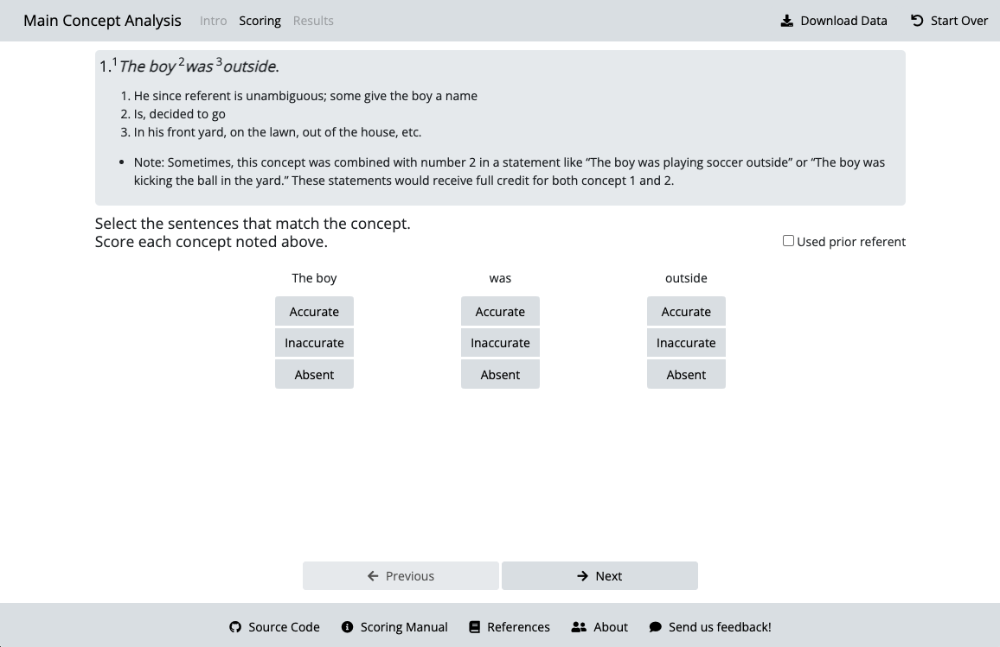
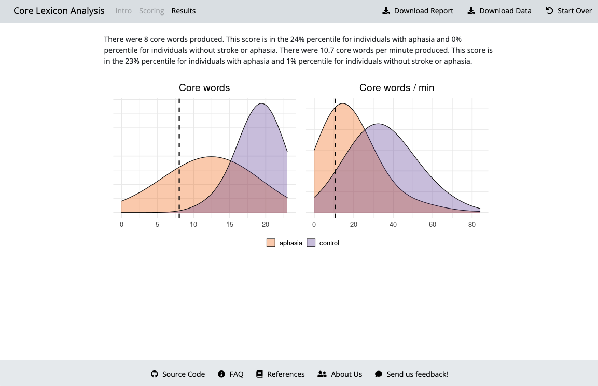
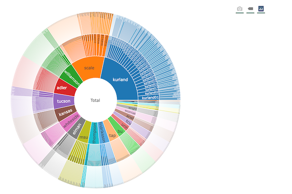
About
This page includes web apps and other websites I’ve created since my time as a PhD students at the University of Pittsburgh. Some are R Shiny apps built with the goal of improving research dissemination or communicated complex statistical principles. There are examples of assessment web-apps for aphasia, including the computer adaptive Philadelphia Naming Test, computer adatpive Aphasia Communication Outcome Measure, as well as non-transcription based discourse measures - core lexicon and main concept analysis. These web-apps are the result of collaborations with aphasia researchers who developed the assessments and were looking for ways to make them more accessible to clinicians and researchers. I have also used R Shiny to create web-apps for disseiminating methods research and explaining statistical concepts.
There are also some static websites for disseminating information, such as the recent CSD Statistics resource page, which was commissioned by Will Evans to provide a single location resource for CSD PhD students who want to learn R or increase their statistics skillset. The Aphasia Tech Map was the result of a collaboration with John Pierce and Miranda Rose as part of the Collaboration of Aphasia Trialists Aphasia Rehabilitation Research Technology Mapping Project. And the Aphasia Research Finder originated from a challenge we frequently came across at Pitt - that there was no aphasia-friendly resource to help individuals with aphasia find research opportunities close to them or help them contact researchers. The website scrapes data from clinicaltrials.gov and displays it on a map, with suggestions for how to reach out to researchers. More recently, the National Aphasia Association has created a database for this purpose.
I’ve also been dabbling recently in Observable Framework for creating interactive data visualizations. A simple side project includes the Portland Tide website which has an interactive figure of the Tides in Portland ME, so that my wife and I know when we should take our dogs to the beach. Observable is really flexible since it allows the data to be processed in R, but the website to be generated in javascript - meaning there is no need for a backend server (and associated costs!). R Shiny also has some recent upgrades, including shinylive, which allows shiny apps to be run in a browser. The QAB Macro Parser is an example of this - a static webpage running R that allows users to upload one or more QAB Scoring Macro Excel files and download a combined and tidy dataset for further analysis.